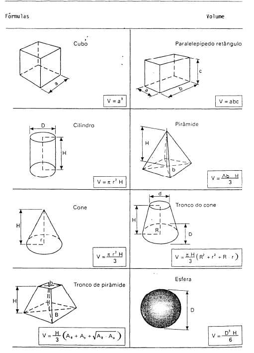
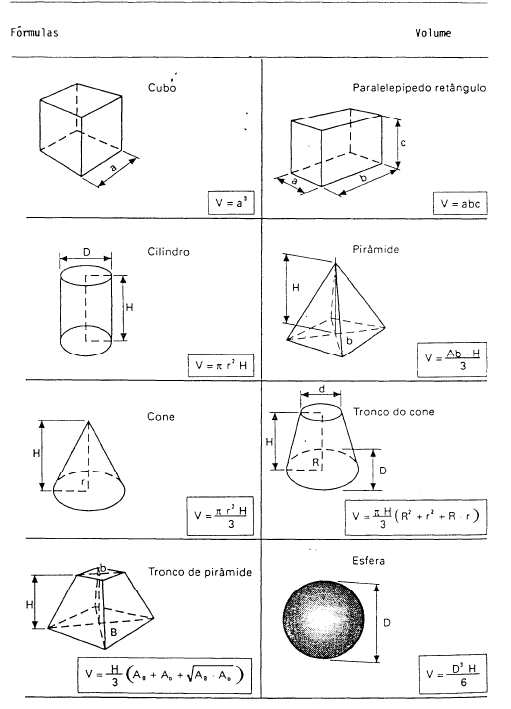
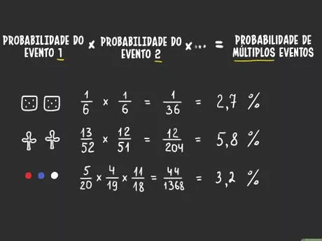
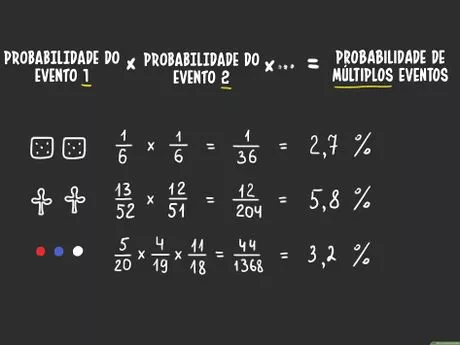

Em Matemática nós vimos sobre o cálculo de área, volume e perímetro em polígonos e poliedros, que ajuda principalmente em estudos sobre engenharias.
 

Também vimos sobre estatística, que usa média, mediana, moda e medida de dispersão, que servem para coletarmos uma grande quantidade de dados e analisá-los mais facilmente. Já em probabilidade calculamos as chances de algo acontecer, como as chances de chover, as chances de uma bolinha sair no bingo e outras coisas, Dentro de probabilidade também aprendemos sobre o Princípio Fundamental da Contagem, que ajuda a analisar eventos de uma vez ou separadamente usando cálculos probabilísticos.
 

Os índices, indicadores, coeficientes e taxas que aprendemos são bastante usados para pegar os dados de cidades, estados, municípios, países e outros, são muito usados para coletar dados sobre emprego, economia, natalidade e outros. Também vimos progressão aritmética, onde são cálculos e alternativas para resolver problemas matemáticos de forma mais "simples".